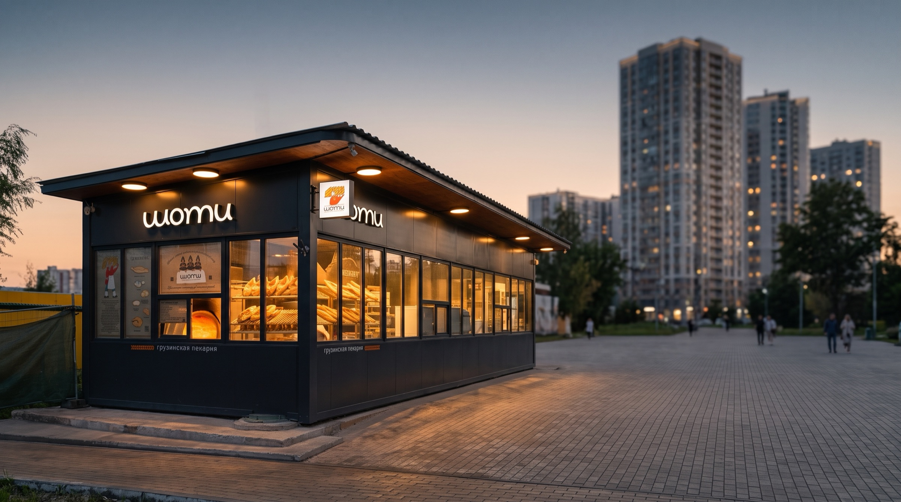
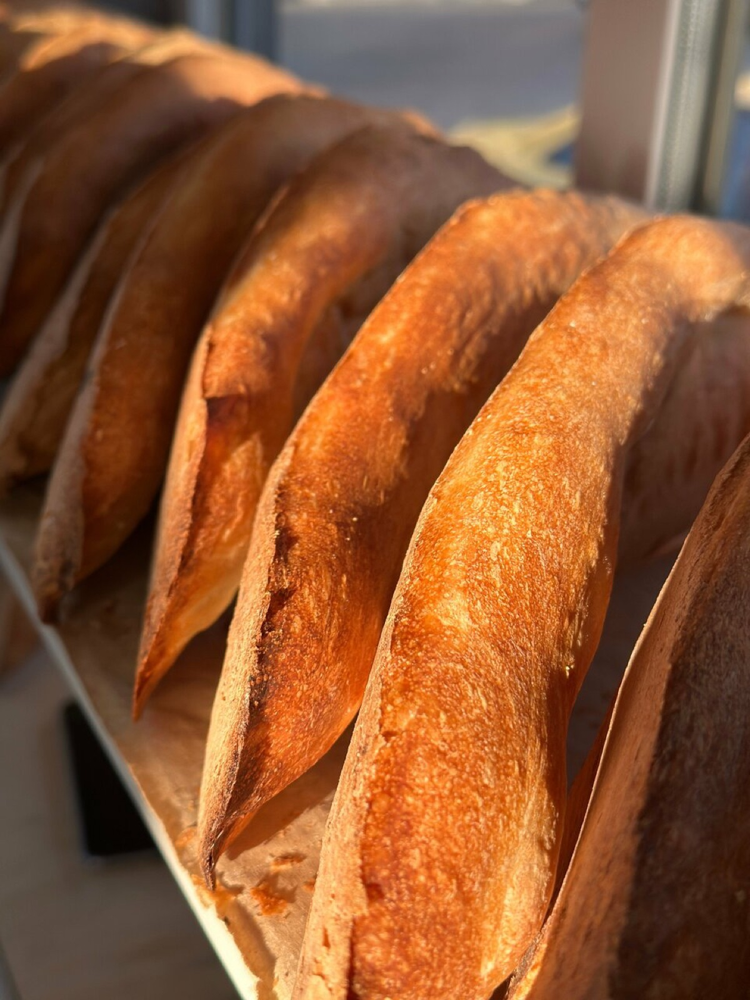
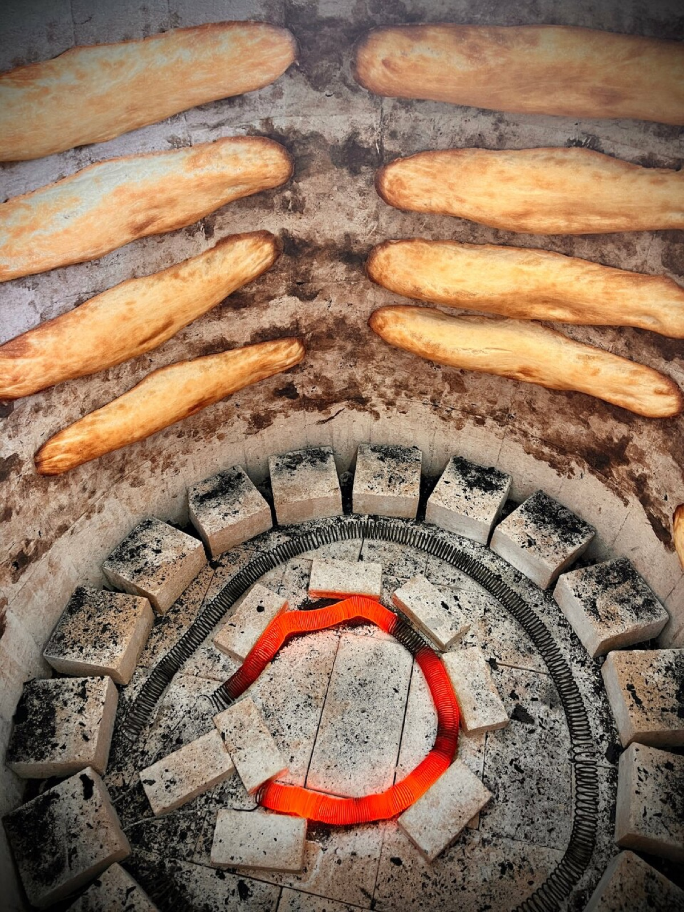
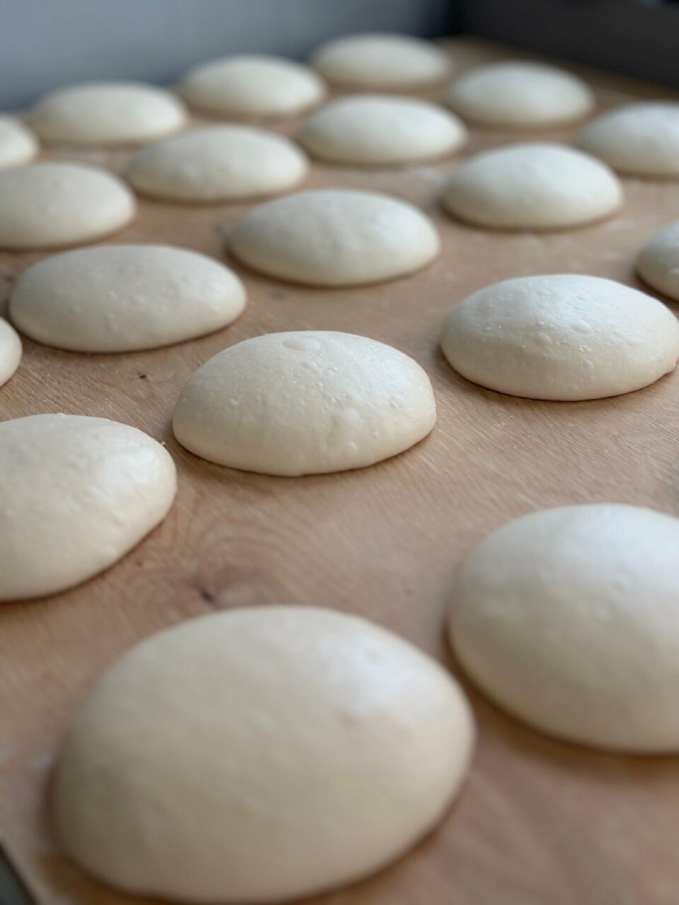
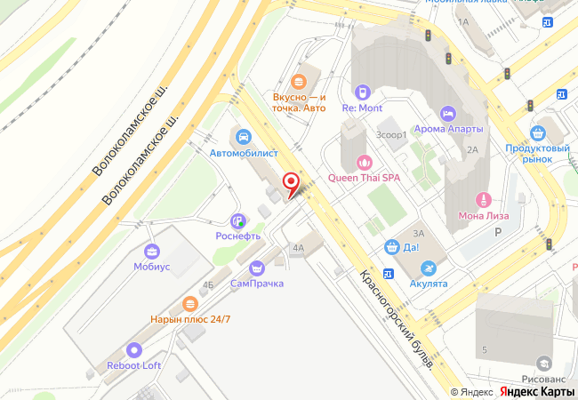

София Ш.★★★★★ 5 из 5
Яндекс Карты, октябрь 2025
Яндекс Карты, октябрь 2025
«Очень вкусно, как в Тбилиси, я жила там год и точно знаю что этот шоти - настоящий!»

Шоти из печи тонэ, хинкали и грузинские сыры на Красногорском бульваре. Хлеб часто ещё горячий.

Шоти пекут на раскалённой стенке печи тонэ. Гости потом пишут про хрустящую корку и мягкий мякиш.
Тонэ — круглая грузинская печь: лепёшки держатся прямо на её стенке, жар идёт снизу. Домой хлеб уходит в крафтовом пакете.


«Очень вкусно, как в Тбилиси, я жила там год и точно знаю что этот шоти - настоящий!»
«Это самые вкусные хинкали из того, что есть вокруг… Взяли в этот раз еще и соус сацибели. Явно делают сами! Очень вкусно. Отличный ужин без заморочек получился»
«…Всегда свежий, а часто еще и горячий!) Пока дохожу до дома - съедаю минимум треть))»
«Наконец-то можно купить вкусный хлеб в Павшинской Пойме, именно такого не хватало! У этого хлеба есть вкус…»
«…Рекомендую багет с фасолью из тандыра, это очень вкусно, много начинки, а хрустящая корочка просто изумительная!»

Спросите по телефону, что сейчас из печи.
Ежедневно 09:00–21:00+7 916 697-85-84